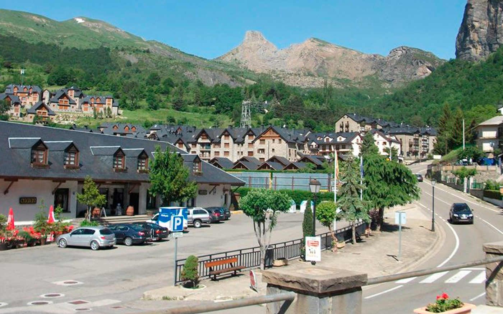

Descubre los 4 destinos más baratos de España. Hoy te traemos un listado con sitios bonitos y baratos para viajar en España, tanto de playa como de montaña, sin olvidar hermosas e históricas ciudades.
Te mostraremos las principales actividades y visitas que puedes realizar en cada uno de estos magníficos destinos, así como las mejores recomendaciones de alojamientos vacacionales en los que dormir.¡Viaja sin gastar de más y disfruta de la rica cultura, paisajes y gastronomía que te esperan en cada rincón!

Escarrilla
Granada
Segur de Calafell
Zaragoza
Escarrilla
En pleno valle de Tena, Escarrilla es uno de los pueblos más bonitos del Pirineo Aragonés.
Es, sin duda alguna, el lugar ideal para los amantes de los deportes al aire libre, como el senderismo o el montañismo. Y, sobre todo, para esquiadores, ya que las estaciones de Formigal y Panticosa se encuentran muy cerca.
Rodeada por un paisaje inmejorable, con el embalse de Lanuza al norte y el pantano de Búbal al sur, ofrece un ambiente rural idóneo para pasar las vacaciones.
Encontrarás Jaca a tan sólo 40 km, pero no tienes que irte muy lejos para encontrar monumentos que visitar.
Las fuentes de Escarrilla, su puente viejo o su iglesia parroquial son sólo algunas de las visitas imprescindibles en uno de los sitios baratos en España para ir de vacaciones: Escarrilla.
Precisamente, encontrarás los apartamentos de alquiler vacacional en Escarrilla perfectos para disfrutar de tu estancia.
Granada
Uno de los sitios bonitos y baratos para viajar en España que más gusta es Granada.Desde el emblemático palacio de La Alhambra hasta las hermosas iglesias y monumentos de la ciudad, hay mucho que explorar.El casco antiguo de Granada está repleto de monumentos y lugares de interés asombrosos. Pasea por el Corral del Carbón y explora la hermosa Alcaicería, un colorido bazar tradicional.Luego dirígete a la impresionante Catedral y al imponente Palacio Arzobispal.Otra visita obligada del centro histórico de Granada es el espectacular palacio de La Alhambra.Este complejo de palacio y fortaleza construido en el siglo IX, declarado Patrimonio de la Humanidad por la UNESCO, es uno de los ejemplos más impresionantes de arquitectura islámica del mundo.Por su parte, el Monasterio de la Cartuja es un hermoso claustro situado detrás de la Catedral de Granada.Construido en estilo barroco, el monasterio ofrece una vista impresionante y sus apacibles jardines son un lugar estupendo para tomarse un descanso y disfrutar de un ambiente tranquilo.Parte importante de la cultura española es la gastronomía. Descubre Granada a través de su deliciosa escena gastronómica de tapas y saborea el apetitoso marisco y los sabrosos platos andaluces que ofrece la ciudad.
Segur de Calafell
Segur de Calafell es un bonito destino turístico de la Costa Dorada y una de las zonas de playa más baratas de España.
Destaca especialmente por sus largas playas de arena fina. La principal cuenta con más de kilómetro y medio de longitud y todos los servicios.
Podrás realizar diferentes actividades, como surf, vela, submarinismo… Si buscas diversión, te recomendamos el tobogán gigante Calafell Slide, el único tobogán de este tipo de toda la península ibérica.
También encontrarás en la zona un amplio abanico de lugares para visitar en España baratos, como el Castell de la Santa Creu o la Ciudadela Ibérica de Calafell.
Zaragoza
Zaragoza es uno de los lugares para visitar en España baratos que no te puedes perder.
La Basílica del Pilar, la Catedral de La Seo o la Aljafería son las principales visitas que hacer en Zaragoza. Y también tienes el Acuario de Zaragoza, el acuario fluvial más grande de Europa, o los museos romanos.La oferta cultural es muy amplia y variada. El Museo Goya, el de los Bomberos, el Museo Pablo Gargallo o el IAACC Pablo Serrano son sólo algunos de los principales.
El Parque de Atracciones hará las delicias de grandes y pequeños y en los numerosos parques de la ciudad podrás disfrutar de actividades al aire libre, como ir en bicicleta.En los alrededores de Zaragoza encontrarás fantásticas excursiones, como los Galachos de Juslibol, el Monasterio de Piedra o el Monasterio de Rueda.
En Zaragoza, uno de los lugares más baratos para viajar en España, también podrás asistir a numerosas ferias y congresos. Consulta toda la programación de eventos antes de tu visita.
Te recomendamos alojarte en estos apartamentos de alquiler turístico en Zaragoza. Están muy bien ubicados, en el corazón del barrio del Actur, uno de los más modernos y con mejores servicios, comunicaciones e infraestructuras.Muy cerca encontrarás las principales atracciones turísticas de Zaragoza y, además, las paradas de transporte público se encuentran junto a los apartamentos.